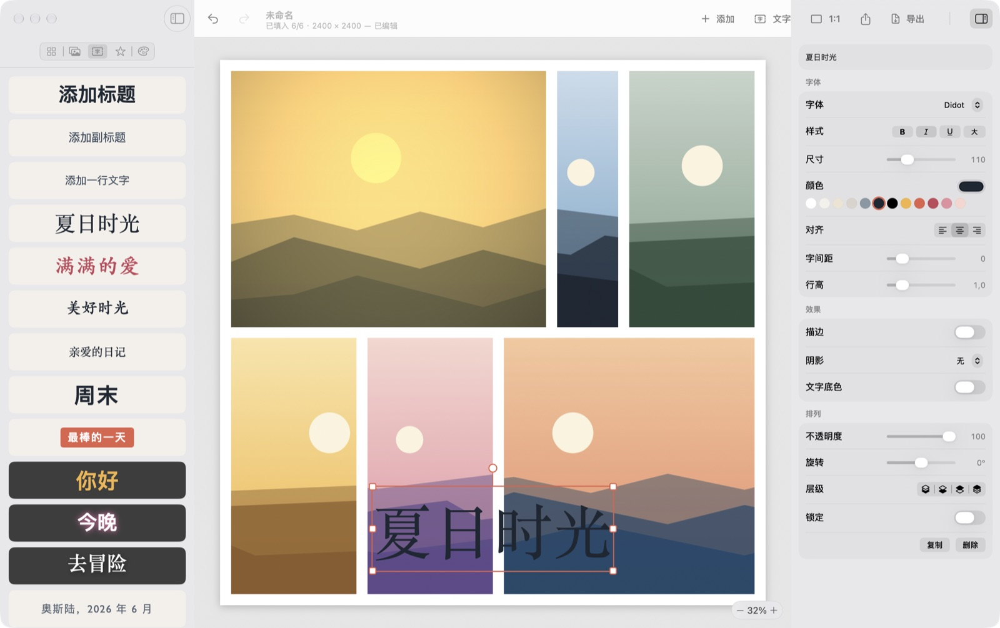

Mosaikk
亲手拼出的照片拼贴。
从 200 多个布局中选一个，放入照片，拖动照片之间的边框，直到看起来刚刚好。加上文字、贴纸和背景，在你的 Mac 上导出任意尺寸的图片。Mosaikk 是挪威语里“马赛克”的意思。
平台macOS 14 或更新版本
价格免费，Apache 2.0
网络完全不联网
语言EN, 简体, 繁體

它能做什么
- 布局1 到 25 张照片的网格、主图布局和马赛克，带形状的相框，还有像散放照片一样的自由排列。
- 拖动边框拖动格子之间的线来调整大小。可以分割、删除或增加格子，也能一键让它们等大。
- 每张照片拖动选择裁剪范围，缩放、旋转、翻转；拖到另一个格子上就能交换。16 种滤镜和 12 项调整。
- 文字和贴纸Mac 上的任何字体，带描边、阴影、发光和底色，直接在拼贴上输入。还有形状、徽章和表情符号。
- 任意尺寸纯色、渐变、图案或模糊照片做背景。社交媒体、打印和自定尺寸；导出 PNG、JPEG 或 HEIC。
获取 Mosaikk
免费。经过签名和公证的下载版在 GitHub 上；打开磁盘映像，把 Mosaikk 拖到“应用程序”即可。即将登陆 Mac App Store。